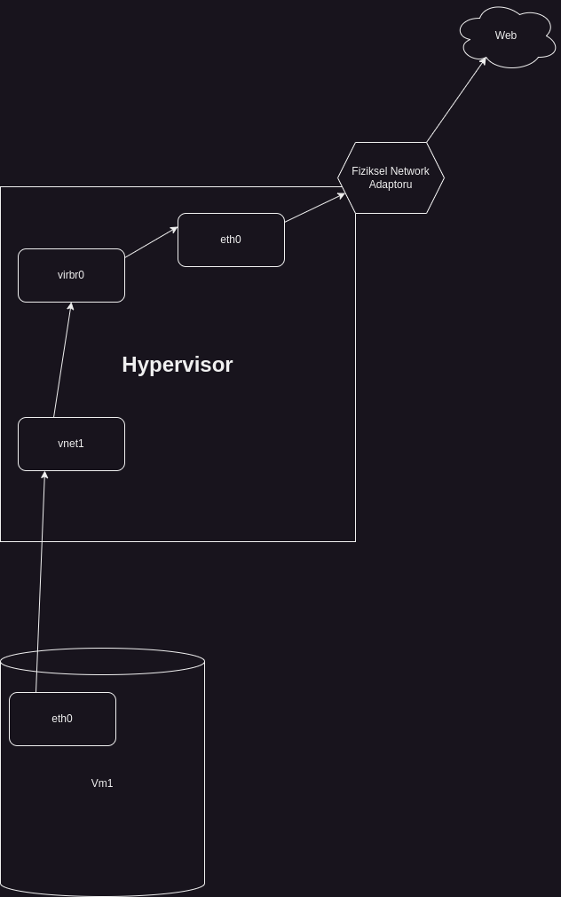

Libvirt'in Network Sistemi
Libvirt Uzerinde Calisan Default Network
Asagidaki komut ile libvirt ile birlikte calisan networkler listelenebilir.
virsh net-list --all
Libvirt kurulumu ile birlikte gelen varsayilan networkun adi defaultdur. Ilk kurulumda otomatik olarak baslamaz, el ile baslastilmasi ve duruma gore autostart hale getirilmesi gerekebilir.
Bu network baslatildiktan sonra virbr0 adinda bir network interfaceinin olustugunu gorebiliriz. 4 numarali interface. Bu interface sanal bir switch gorevi gorur. Olusturulan sanal makineler bu switch'e bagliymis gibi davranir.
berk@berk-notebook:~/Documents/repos/docs$ ip a
1: lo: <LOOPBACK,UP,LOWER_UP> mtu 65536 qdisc noqueue state UNKNOWN group default qlen 1000
link/loopback 00:00:00:00:00:00 brd 00:00:00:00:00:00
inet 127.0.0.1/8 scope host lo
valid_lft forever preferred_lft forever
inet6 ::1/128 scope host noprefixroute
valid_lft forever preferred_lft forever
2: enp4s0: <NO-CARRIER,BROADCAST,MULTICAST,UP> mtu 1500 qdisc fq_codel state DOWN group default qlen 1000
link/ether 88:a4:c2:54:35:af brd ff:ff:ff:ff:ff:ff
3: wlp0s20f3: <BROADCAST,MULTICAST,UP,LOWER_UP> mtu 1500 qdisc noqueue state UP group default qlen 1000
link/ether cc:15:31:ea:8d:ff brd ff:ff:ff:ff:ff:ff
inet 192.168.1.178/24 brd 192.168.1.255 scope global dynamic noprefixroute wlp0s20f3
valid_lft 70988sec preferred_lft 70988sec
inet6 fd00::bdfb:aa4a:5494:e47d/64 scope global temporary dynamic
valid_lft 29sec preferred_lft 29sec
inet6 fd00::a54a:d2b6:a31e:cbc2/64 scope global dynamic mngtmpaddr noprefixroute
valid_lft 29sec preferred_lft 29sec
inet6 fe80::e6c3:321a:f4cc:d0c2/64 scope link noprefixroute
valid_lft forever preferred_lft forever
4: virbr0: <BROADCAST,MULTICAST,UP,LOWER_UP> mtu 1500 qdisc noqueue state UP group default qlen 1000
link/ether 52:54:00:91:e2:8d brd ff:ff:ff:ff:ff:ff
inet 192.168.122.1/24 brd 192.168.122.255 scope global virbr0
valid_lft forever preferred_lft forever
DHCP ve DNSMASQ
Libvirt kurulumu ile birlikte gelen, arkada calisan bir process mevcut. Adi dnsmasq.
berk@berk-notebook:~/Documents/repos/docs$ ps aux | grep -i dnsmasq
libvirt+ 3777 0.0 0.0 11484 2348 ? S 09:19 0:01 /usr/sbin/dnsmasq --conf-file=/var/lib/libvirt/dnsmasq/default.conf --leasefile-ro --dhcp-script=/usr/lib/libvirt/libvirt_leaseshelper
root 3778 0.0 0.0 11484 1708 ? S 09:19 0:00 /usr/sbin/dnsmasq --conf-file=/var/lib/libvirt/dnsmasq/default.conf --leasefile-ro --dhcp-script=/usr/lib/libvirt/libvirt_leaseshelper
dnsmasq 4765 0.7 2.9 2037796 470492 ? Ssl 09:19 6:04 mysqld
berk 911011 0.0 0.0 9144 2304 pts/0 S+ 23:22 0:00 grep --color=auto -i dnsmasq
Dnsmasq, kucuk networkler icin tasarlanmis DNS ve DHCP sunucusudur. Genellikle local networklerde DNS isteklerini cozmek, ip adresleri atamak ve ag yonetimini kolaylastirmak amaciyla kullanilir. Yani libvirt'in default networkunu kullandigimizda aslinda ipleri dagitan yazilim dnsmasq diyebiliriz.
Buradan dnsmasq'in configine bakarak dhcp-range'ini ogrenebiliriz. Bu ayarlar libvirt tarafindan otomatik olarak yapilir.
berk@berk-notebook:~/Documents/repos/docs$ sudo cat /var/lib/libvirt/dnsmasq/default.conf
[sudo] password for berk:
##WARNING: THIS IS AN AUTO-GENERATED FILE. CHANGES TO IT ARE LIKELY TO BE
##OVERWRITTEN AND LOST. Changes to this configuration should be made using:
## virsh net-edit default
## or other application using the libvirt API.
##
## dnsmasq conf file created by libvirt
strict-order
user=libvirt-dnsmasq
pid-file=/run/libvirt/network/default.pid
except-interface=lo
bind-dynamic
interface=virbr0
dhcp-range=192.168.122.2,192.168.122.254,255.255.255.0
dhcp-no-override
dhcp-authoritative
dhcp-lease-max=253
dhcp-hostsfile=/var/lib/libvirt/dnsmasq/default.hostsfile
addn-hosts=/var/lib/libvirt/dnsmasq/default.addnhosts
Linux bir makineye libvirt kurulumu yapildiginda ve default network aktif edildiginde otomatik olarak sanal bir bridge ve dhcp serveri otomatik olarak kuruluyor.
Sanal Makineler ve Libvirt'in Network Sistemi
Simdi sanal makinelerimizin durumlarini inceleyelim.
berk@berk-notebook:~/Documents/repos/docs$ virsh list --all
Id Name State
---------------------------------
- debian12-fresh shut off
- ubuntu24.04 shut off
Goruldugu uzere 2 adet sanal makine var ve ikisi de kapali gozukuyor. virsh dumpxml komutu ile bu sanal makinelerin ayar dosyalarini terminal uzerinde gorunteleyebiliriz.
berk@berk-notebook:~/Documents/repos/docs$ virsh dumpxml debian12-fresh | grep 'network='
<source network='default'/>
debian12-fresh isimli sanal makine network olarak default isimli networku kullaniyor. Yani Hypervisor olarak gorev yapan ana makinemizin uzerindeki virbr0 isimli interface uzerinden baglanti sagliyor.
Bu sanal makineyi calistirdiktan sonra gerceklesen degisiklikleri gozlemleyelim;
virsh start debian12-fresh
Sanal makinemizi baslattiktan sonra ip a komutu ile interfacelerimizi tekrar kontrol edelim:
14: vnet1: <BROADCAST,MULTICAST,UP,LOWER_UP> mtu 1500 qdisc noqueue master virbr0 state UNKNOWN group default qlen 1000
link/ether fe:54:00:81:86:f7 brd ff:ff:ff:ff:ff:ff
inet6 fe80::fc54:ff:fe81:86f7/64 scope link
valid_lft forever preferred_lft forever
Yeni bir network interface'in belirdigini gozlemleyebiliriz. Bu olusan interface sanal makinenin bagli oldugu interfacedir. Gercekte sanal makinenin bagli oldugu switch olarak dusunebiliriz.
Ayrica Interface'in detaylarina baktigimizda master virbr0 state UNKNOWN yazdigini gorebiliriz. Yani bu interface virbr0 isimli interface'e bagli. virbr0 da default isimli libvirt networkunun olusturdugu interface. Basitce asagidaki gibi gorsellestirebiliriz.

Hypervisor (KVM Host) Uzerindeki Routing Table
Trafik host uzerindeki routing table kurallarina gore yonlenir. Host berkbal.com'a ulasmak istediginde gateway uzerinden yonlenir. Asagidaki komut ile routing table'a goz atabiliriz.
berk@berk-notebook:~/Documents/repos/docs$ route
Kernel IP routing table
Destination Gateway Genmask Flags Metric Ref Use Iface
default _gateway 0.0.0.0 UG 600 0 0 wlp0s20f3
172.17.0.0 0.0.0.0 255.255.0.0 U 0 0 0 docker0
172.18.0.0 0.0.0.0 255.255.0.0 U 0 0 0 br-970466c5d983
172.19.0.0 0.0.0.0 255.255.0.0 U 0 0 0 br-4b58726a0486
172.20.0.0 0.0.0.0 255.255.0.0 U 0 0 0 br-8fdaf0fbab2e
192.168.1.0 0.0.0.0 255.255.255.0 U 600 0 0 wlp0s20f3
192.168.122.0 0.0.0.0 255.255.255.0 U 0 0 0 virbr0
berk@berk-notebook:~/Documents/repos/docs$
default isimli kaynak wlp0s20f3 isimli interface uzerinden internete cikis yapiyor.
Lıbvırt'in varsayılan network yapisi bu sekilde calisiyor.
Bridge Olusturmak
Varsayilan bridge'i kullanmak istemiyorsak veya baska bir bridge ihtiyaci duyuyorsak yeni bir birdge olusturabiliriz.
ip isimli araci kullanarak yeni bir bridge aygiti ekleyebiliriz.
ip link add name br1 type bridge
Bu sekilde bir bridge tanimladiktan sonra bunu default libvirt network yapisinda oldugu gibi fiziksel ethernet cihazina baglamamiz gerekiyor.
ip link set eno1 master br1
Buradaki eno1 fiziksel cihazinizi temsil eden interface olmali.
Simdi ekledigimiz bridge'e bir ip adresi verelim.
ip addr add 192.168.1.4/24 dev br1 brd 192.168.1.255
ip a komutunun ciktisina baktigimizda bu interfacein bir ip adresine sahip oldugunu gorebiliriz.
18: br1: <BROADCAST,MULTICAST> mtu 1500 qdisc noop state DOWN group default qlen 1000
link/ether 16:6f:bb:49:6a:09 brd ff:ff:ff:ff:ff:ff
inet 192.168.4.7/16 brd 192.168.255.255 scope global br1
valid_lft forever preferred_lft forever
interface'in state'i DOWN durumda. Ayaga kaldiralim:
ip link set up br1
Tekrar ip a komutu ile kontrol ettigimizde state UP olarak gormeliyiz.
18: br1: <BROADCAST,MULTICAST,UP,LOWER_UP> mtu 1500 qdisc noqueue state UP group default qlen 1000
link/ether 16:6f:bb:49:6a:09 brd ff:ff:ff:ff:ff:ff
inet 192.168.4.7/16 brd 192.168.255.255 scope global br1
valid_lft forever preferred_lft forever
inet6 fd00::d287:2e0d:95f7:bee6/64 scope global temporary dynamic
valid_lft 30sec preferred_lft 30sec
inet6 fd00::146f:bbff:fe49:6a09/64 scope global dynamic mngtmpaddr
valid_lft 30sec preferred_lft 30sec
inet6 fe80::146f:bbff:fe49:6a09/64 scope link
valid_lft forever preferred_lft forever
route add default gw 192.168.1.1 dev br1
Libvirt'e Oluşturduğumuz Bridge'i Entegre Etmek
Manuel olarak oluşturduğumuz br1 isimli köprüyü Libvirt'in tanıması ve kullanabilmesi için bir Libvirt ağ tanımı (network definition) oluşturmamız gerekiyor.
Öncelikle, yeni köprümüz için bir XML tanım dosyası oluşturalım. Örneğin, br1-network.xml adında bir dosya yaratabiliriz:
<network>
<name>br1-network</name>
<forward mode='bridge'/>
<bridge name='br1'/>
<ip address='192.168.4.1' netmask='255.255.255.0'>
<dhcp>
<range start='192.168.4.100' end='192.168.4.200'/>
</dhcp>
</ip>
</network>
XML dosyasını oluşturduktan sonra, bu tanımı Libvirt'e eklemeliyiz.
virsh net-define br1-network.xml
Tanımladığımız ağı başlatmak için:
virsh net-start br1-network
Sistem yeniden başlatıldığında bu ağın otomatik olarak başlamasını istersek:
virsh net-autostart br1-network
Artık virsh net-list --all komutuyla yeni br1-network ağını listede görebiliriz.
Sanal Makineleri Yeni Bridge'e Bağlamak
Sanal makinelerimizi bu bridge yapısına bağlamak istersek sanal makinenin XML dosyasını düzenlememşiz gerekmektedir.
Örneğin, virsh edit debian12-fresh komutunu kullanarak sanal makinenin XML dosyasını aç ve ağ arayüzü (network interface) tanımını aşağıdaki gibi güncelle:
Bu değişikliği yaptıktan sonra sanal makineyi kapatıp tekrar başlatmak gerekecek:
virsh shutdown debian12-fresh
virsh start debian12-fresh
Sanal makine başladığında, artık br1 köprüsü üzerinden bağlanacak.